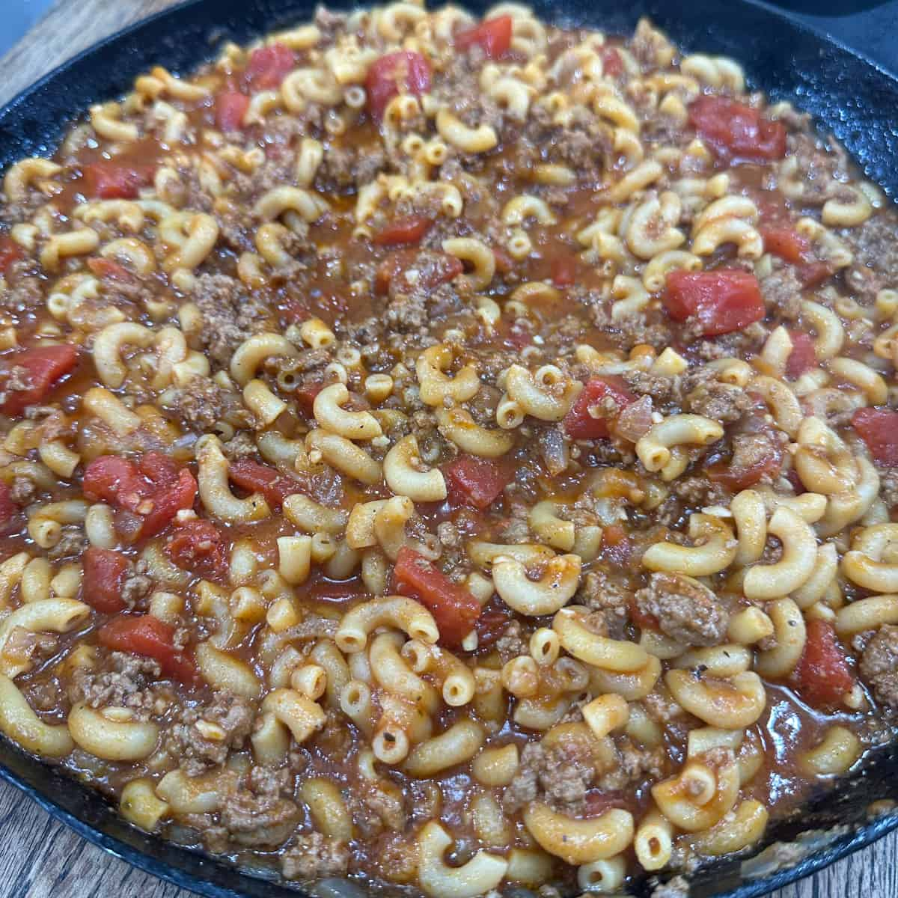

My Favorite Goulash Recipe

Description
Here you have a generic representation of a childhood favorite recipe of mine.
A traditional Goulash recipe is quite literally just a remainder of whatever you
have available in your pantry, but it does have a typical design, much like a website.
In my household, here's a typical recipe path that we used.
Ingredients
- Pasta - generally any kind will do.
- Ground Beef - we typically portioned our ground beef in 1 lb increments.
- Tomato Paste - in a pinch, ketchup after the fact is acceptable.
- Beans and/or corn - Controversial I know, but when you're poor you accept whatever flavor you can get.
- Mess around and find out. FAFO for short. Have fun with it!
Steps
- First thing you want to do is season your ground beef.
- Next bring a pot of water to a boil.
- As the water comes to temp, go ahead and start browning the ground beef. Season to taste
- Once the water is boiling, add pasta and salt
- Once your beef is browned and seasoned, add tomato paste and the other ingredients of choice
- Using a colander, strain the cooked pasta and add to the beef skillet.
- Stir all ingredients together, still seasoning to taste.
- Let rest and enjoy!